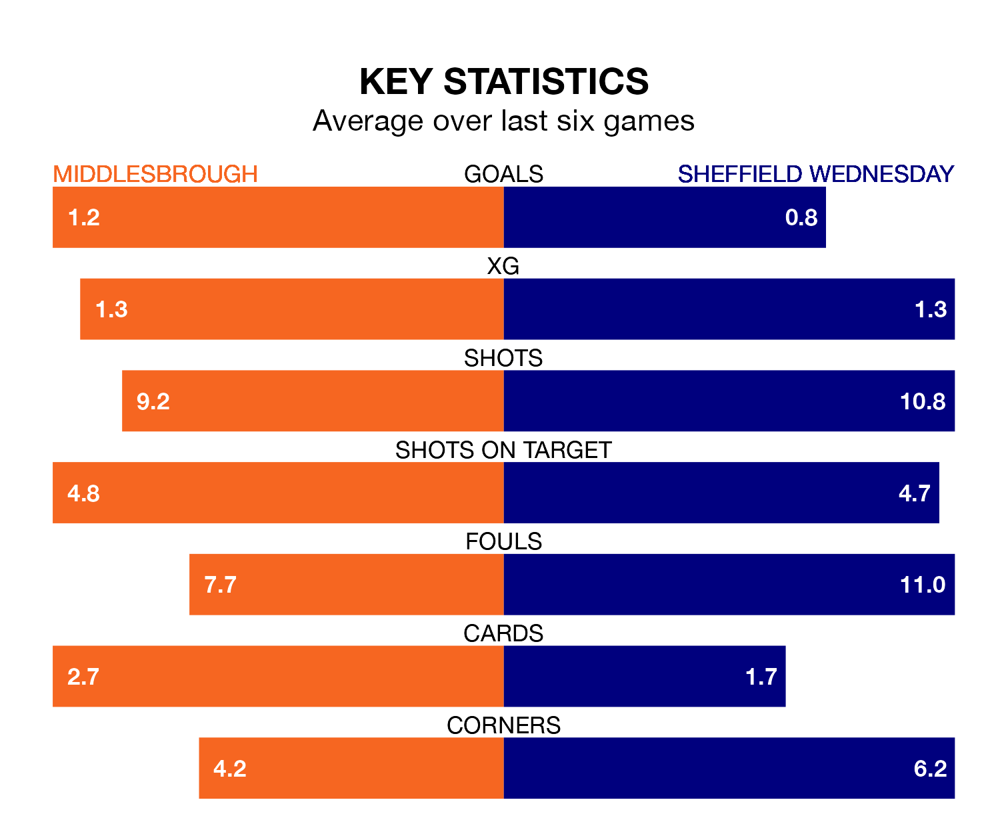

Middlesbrough face Sheffield Wednesday on Monday seeking to protect their long unbeaten run in EFL Championship.
The Boro are unbeaten in five, with three wins and two draws, ahead of the 3pm kick-off.
They face a Wednesday team who have won two and drawn one over the same number of games.
Wednesday are 23rd in the table after 39 games, of which they have won 11 and drawn six, earning 39 points.
Middlesbrough are 13 places ahead of the Owls in 10th, with 16 wins and seven draws putting them on 55 points.
In the last 10 years, Middlesbrough and Wednesday have played each other on 14 occasions. Middlesbrough won seven of them, Wednesday five, and they drew twice.
On average, the Boro scored 1.5 goals and the Owls 1.3 in those matches.
Their last meeting was on September 19, when they played out a 1-1 draw.
With 31 goals in 39 games so far this season, the away team are the league's second-lowest scorers with 0.8 goals per game. And they are conceding more than average, letting in 62 goals at a rate of 1.6 per game.
The Boro, meanwhile, are average scorers, with 1.4 goals per game. They have also conceded 1.4 goals per game.
Middlesbrough's last match was on Friday, a 1-1 draw against Southampton, with Emmanuel Latte Lath getting the goal for the Boro.
Wednesday drew 1-1 with Swansea City last time out, also on Friday, with Bailey-Tye Cadamarteri on the scoresheet.
Monday's match will be refereed by Tom Nield, who has taken charge of 10 EFL Championship games so far this season, issuing no red cards and booking 40 players. He has awarded one penalty.
The last Wednesday game Nield refereed was the 2-0 loss away at Leicester City on February 13. He is yet to oversee a match featuring Middlesbrough this season.
Updated: 10:31 (UTC), 31/03/24